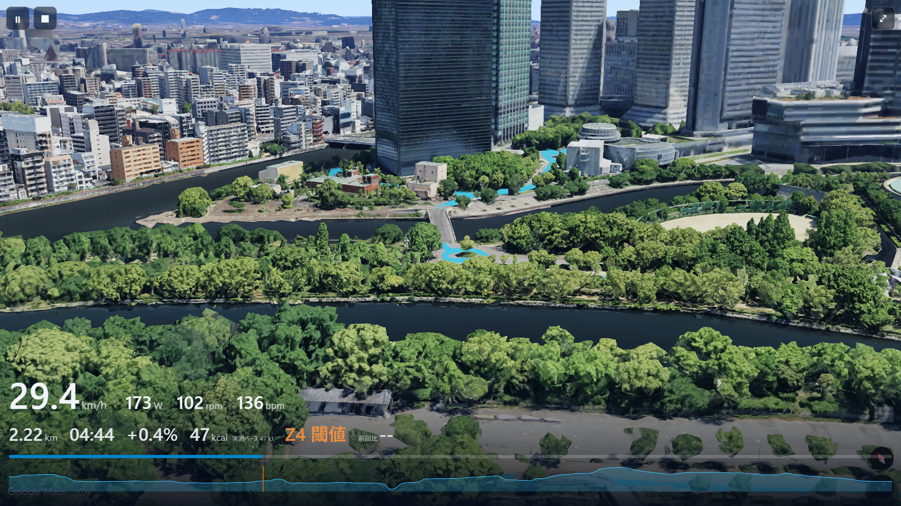
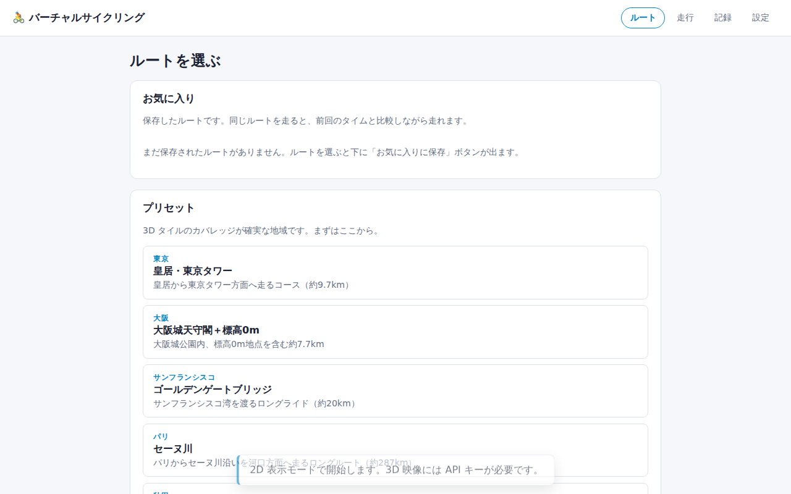
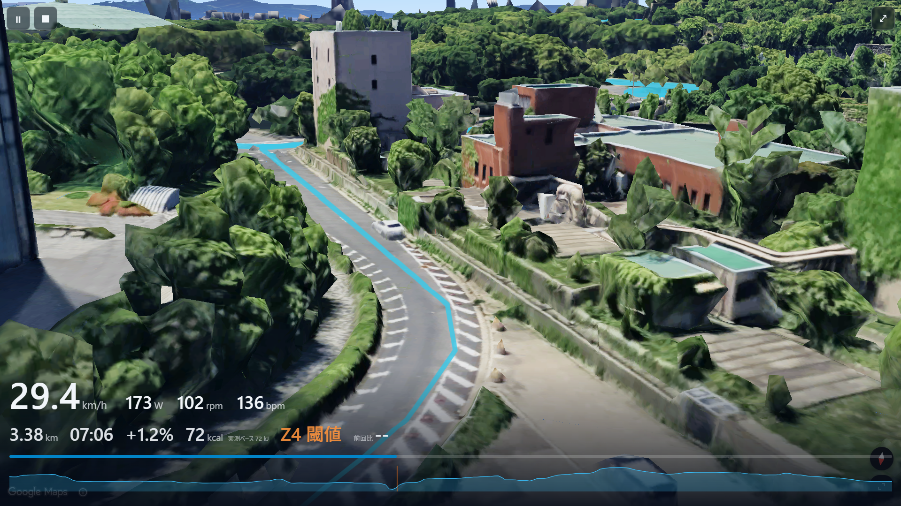
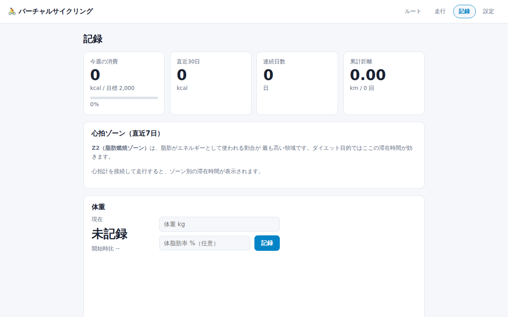

SMART TRAINER OWNERS · テスト期間中は無料
月額のかかる既存アプリに疑問を感じて、自分で作りました。 Bluetooth FTMS 対応のスマートトレーナーと連携し、Google マップの実在する景色を、 自分が漕いだ距離だけ進む。坂道に差しかかれば、ペダルはちゃんと重くなります。

WHY IT'S SITTING UNUSED
同じ壁を見ながら漕ぎ続けるのは、単純に退屈だからです。 その退屈を解決してくれる本格的なアプリほど、お試しには重い月額がかかります。
景色が動かないジムの壁や自室の景色は、10分で飽きます。
ちゃんとしたアプリは高い没入感のある既存アプリは、月々2,000円前後が相場。試しに使うには少し重い。
記録が続かないやった感が数字に残らないと、次の一歩が重くなる。

WHERE TO RIDE
同梱のプリセットは実際に記録・計画されたGPXなので、APIキーが無くても正確な道と標高で走れます。

WHAT YOU SEE
スマートトレーナーから速度・ケイデンス・パワー・心拍を取得。標高から勾配を計算し、坂道はトレーナーの負荷に反映されます。
※ 画面の数値は、機材なしで試せるシミュレーター機能によるものです

WHAT KEEPS YOU GOING
週間の消費カロリー、直近30日、連続日数、心拍ゾーン滞在時間。積み上がっていく記録が、次に漕ぐ理由になります。
擬似出力スライダーで動くシミュレーターモードを内蔵。機材の有無にかかわらず、その場で3分あれば体験できます。
BEFORE YOU START